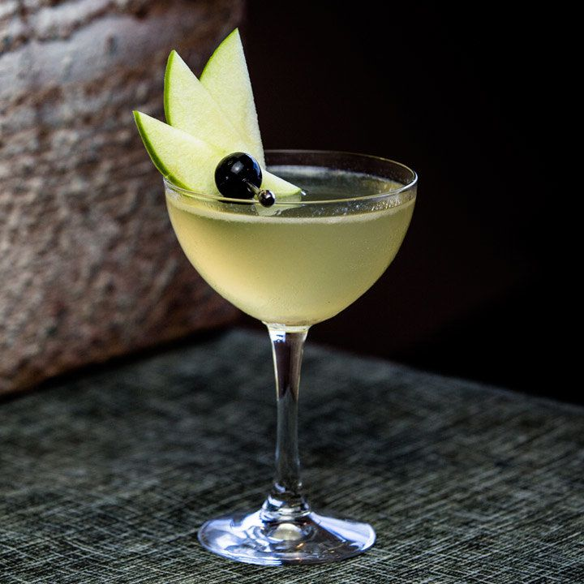

Appletini

A beverage long enjoyed by the gays and fruit flies alike,
this gorgy green goblet is a little sweet, a little sour —
just like you!
Ingredients
- 1/4 ounces vodka
- 1 ounce Calvados apple brandy
- 1 1/4 ounces Granny Smith apple juice
- 1/4 ounce lemon juice, freshly squeezed
- 1/4 ounce simple syrup
- Brandied cherry
- Granny Smith apple slices
Instructions
- Add crushed ice into a cocktail glass and set aside to
chill.
- Add the vodka, Calvados, apple juice, lemon juice and
simple syrup into a shaker with ice and shake until
well-chilled.
- Discard the ice from the cocktail glass and double-
strain the mixture into the glass.
- Garnish with a skewered brandied cherry and 3 Granny Smith
apple slices.